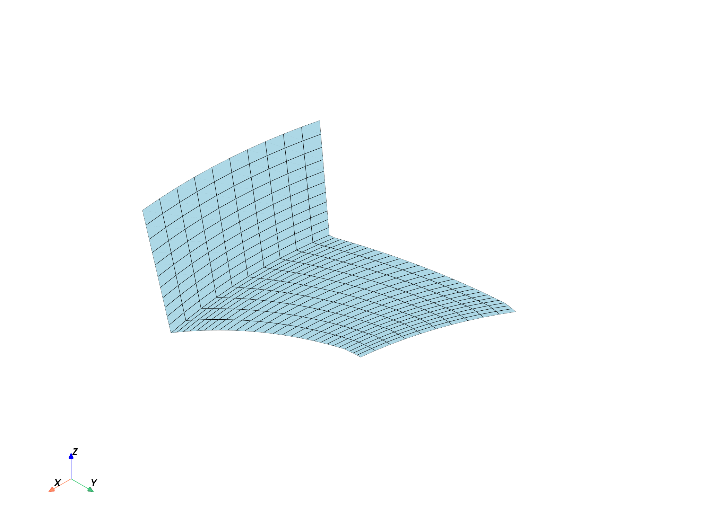
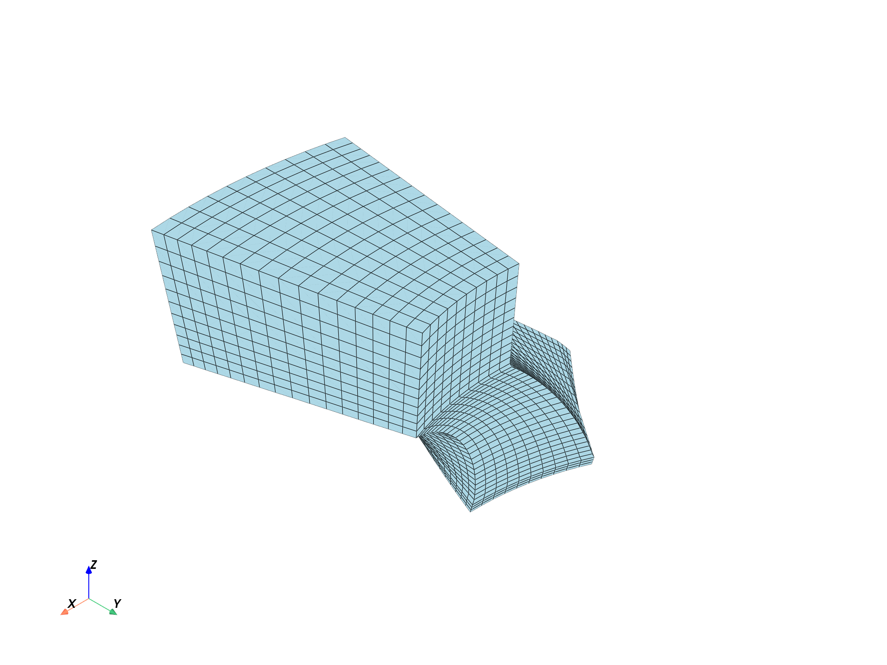

Note
Go to the end to download the full example code.
Explore Fluids mesh#
Note
This example requires DPF 7.0 (ansys-dpf-server-2024-1-pre0) or above. For more information, see Compatibility.
Exploring an Ansys Fluent mesh#
This example demonstrates how you can explore an Ansys Fluent mesh. Import the result file
import ansys.dpf.core as dpf
from ansys.dpf.core import examples
path = examples.download_fluent_axial_comp()["flprj"]
ds = dpf.DataSources(path)
streams = dpf.operators.metadata.streams_provider(data_sources=ds)
Using the mesh_provider#
The mesh_provider operator can be used to retrieve the whole mesh of the
model or the MeshedRegion restricted to a particular body or face zone. The
behavior will differ depending on the inputs to the region_scoping pin.
If no scoping is connected, the mesh for the whole model is obtained. This
is the same mesh that is obtained if the Model.metadata.meshed_region
API is employed.
mesh_whole = dpf.operators.mesh.mesh_provider(streams_container=streams).eval()
print(mesh_whole)
mesh_whole.plot()
DPF Meshed Region:
16660 nodes
13856 elements
44242 faces
Unit: m
With solid (3D) elements
If the region_scoping pin is connected, a Scoping with 1 zone ID is
expected, or an integer list with one item, or a single integer. The supported
zone IDs are either face zone IDs or body IDs. The zones of this particular model
are explored in Explore Fluids models. ID 4 (rotor-shroud) corresponds to a
face zone, and thus its mesh is only comprised of faces and nodes. ID 13 (fluid-rotor)
is a body, and thus its mesh has elements (cells), faces and nodes.
mesh_4 = dpf.operators.mesh.mesh_provider(streams_container=streams, region_scoping=4).eval()
print(mesh_4)
mesh_4.plot()
mesh_13 = dpf.operators.mesh.mesh_provider(streams_container=streams, region_scoping=[13]).eval()
print(mesh_13)
mesh_13.plot()
- 
- 
DPF Meshed Region:
429 nodes
380 faces
Unit: m
DPF Meshed Region:
7293 nodes
6080 elements
19388 faces
Unit: m
With solid (3D) elements
Using the meshes_provider#
The meshes_provider operator can be used to retrieve the mesh for several
zones and time steps of the model. The behavior will differ depending on the
inputs to the region_scoping pin. If no region_scoping is connected, the
MeshedRegion for all body and face zones is retrieved in a MeshesContainer.
If no time_scoping is connected and the simulation is transient, only the meshes
for the first time step are extracted.
meshes_all = dpf.operators.mesh.meshes_provider(streams_container=streams).eval()
print(meshes_all)
print("\n".join([str(meshes_all.get_label_space(i)) for i in range(len(meshes_all))]))
DPF Meshes Container
with 24 mesh(es)
defined on labels: time zone
with:
- mesh 0 {time: 1, zone: 3, } with 429 nodes and 0 elements.
- mesh 1 {time: 1, zone: 4, } with 429 nodes and 0 elements.
- mesh 2 {time: 1, zone: 5, } with 187 nodes and 0 elements.
- mesh 3 {time: 1, zone: 6, } with 187 nodes and 0 elements.
- mesh 4 {time: 1, zone: 7, } with 425 nodes and 0 elements.
- mesh 5 {time: 1, zone: 8, } with 425 nodes and 0 elements.
- mesh 6 {time: 1, zone: 9, } with 204 nodes and 0 elements.
- mesh 7 {time: 1, zone: 10, } with 204 nodes and 0 elements.
- mesh 8 {time: 1, zone: 11, } with 68 nodes and 0 elements.
- mesh 9 {time: 1, zone: 12, } with 68 nodes and 0 elements.
- mesh 10 {time: 1, zone: 13, } with 7293 nodes and 6080 elements.
- mesh 11 {time: 1, zone: 16, } with 551 nodes and 0 elements.
- mesh 12 {time: 1, zone: 17, } with 551 nodes and 0 elements.
- mesh 13 {time: 1, zone: 18, } with 323 nodes and 0 elements.
- mesh 14 {time: 1, zone: 19, } with 323 nodes and 0 elements.
- mesh 15 {time: 1, zone: 20, } with 357 nodes and 0 elements.
- mesh 16 {time: 1, zone: 21, } with 357 nodes and 0 elements.
- mesh 17 {time: 1, zone: 22, } with 357 nodes and 0 elements.
- mesh 18 {time: 1, zone: 23, } with 357 nodes and 0 elements.
- mesh 19 {time: 1, zone: 24, } with 68 nodes and 0 elements.
- mesh 20 {time: 1, zone: 25, } with 68 nodes and 0 elements.
- mesh 21 {time: 1, zone: 26, } with 85 nodes and 0 elements.
- mesh 22 {time: 1, zone: 27, } with 85 nodes and 0 elements.
- mesh 23 {time: 1, zone: 28, } with 9367 nodes and 7776 elements.
{'time': 1, 'zone': 3}
{'time': 1, 'zone': 4}
{'time': 1, 'zone': 5}
{'time': 1, 'zone': 6}
{'time': 1, 'zone': 7}
{'time': 1, 'zone': 8}
{'time': 1, 'zone': 9}
{'time': 1, 'zone': 10}
{'time': 1, 'zone': 11}
{'time': 1, 'zone': 12}
{'time': 1, 'zone': 13}
{'time': 1, 'zone': 16}
{'time': 1, 'zone': 17}
{'time': 1, 'zone': 18}
{'time': 1, 'zone': 19}
{'time': 1, 'zone': 20}
{'time': 1, 'zone': 21}
{'time': 1, 'zone': 22}
{'time': 1, 'zone': 23}
{'time': 1, 'zone': 24}
{'time': 1, 'zone': 25}
{'time': 1, 'zone': 26}
{'time': 1, 'zone': 27}
{'time': 1, 'zone': 28}
If the region_scoping pin is connected, the mesh extraction is restricted to
the zone IDs contained in the input Scoping/list (in this case, a face zone connected
to body 18 and body 13).
meshes_23_13 = dpf.operators.mesh.meshes_provider(
streams_container=streams, region_scoping=[23, 13], time_scoping=[3]
).eval()
print(meshes_23_13)
meshes_23_13.plot()
DPF Meshes Container
with 2 mesh(es)
defined on labels: time zone
with:
- mesh 0 {time: 3, zone: 23, } with 357 nodes and 0 elements.
- mesh 1 {time: 3, zone: 13, } with 7293 nodes and 6080 elements.
Total running time of the script: (0 minutes 10.700 seconds)